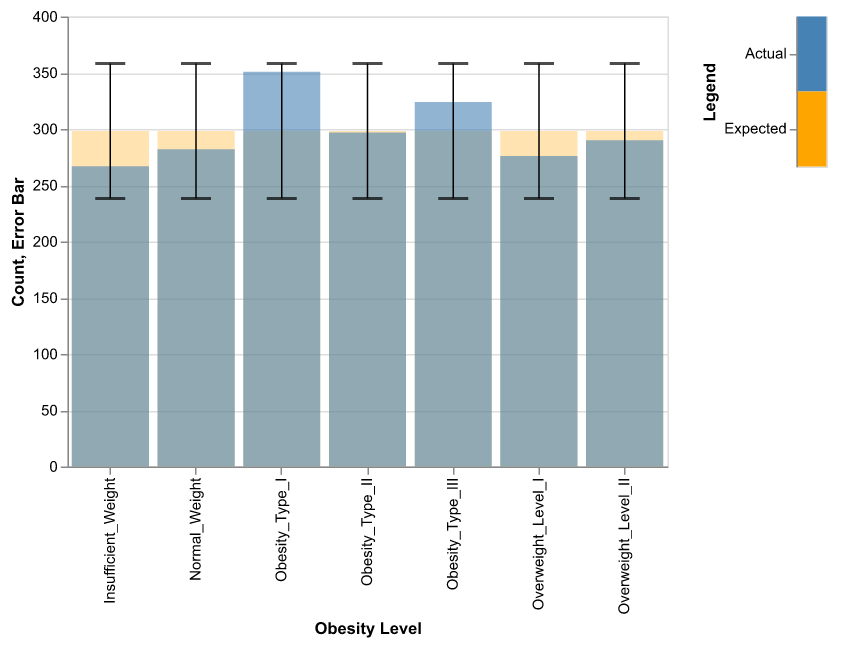
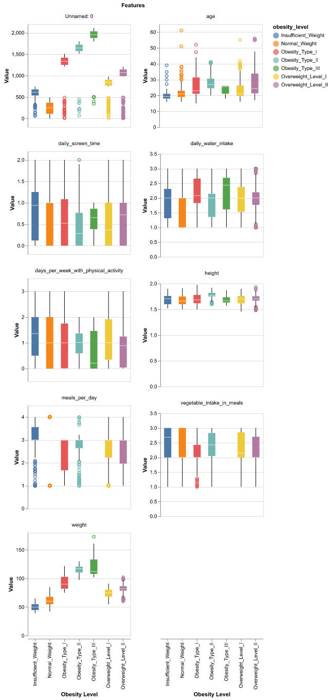
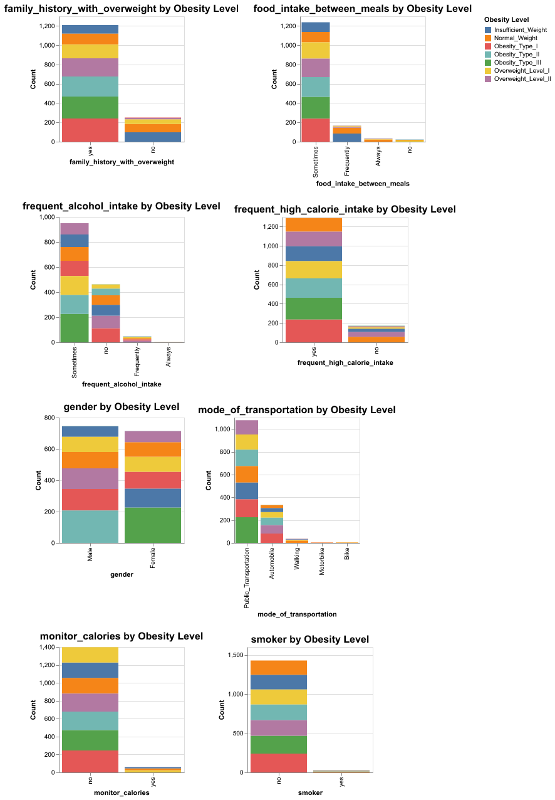

| Model | Accuracy | Average Level Precision | Average Level Recall | |
|---|---|---|---|---|
| 0 | KNN | 0.880383 | 0.877351 | 0.874469 |
| 1 | SVM (RBF Kernel) | 0.971292 | 0.969971 | 0.96991 |
| 2 | AdaBoost + Decision Tree | 0.979266 | 0.978619 | 0.978142 |
Predicting Obesity Level Based on Eating Habits and Physical Condition
Summary
In this study, we aim to develop a classification model to determine whether an individual is obese and, if so, categorize the level of obesity. This analysis seeks to use supervised machine learning to predict obesity levels in individuals based on features related to lifestyle habits and physical condition. Our research question is can machine learning be used as a diagnostic tool for obesity? Three machine learning models — K-Nearest Neighbors (KNN), Support Vector Machine (SVM), and Decision Tree enhanced with AdaBoost — were trained and evaluated for their performance. The results indicate that SVM and the Decision Tree with AdaBoost achieved high predictive accuracy (0.97 and 0.98 respectively) making them the most effective models for this classification task. In contrast, KNN exhibited comparatively lower performance, achieving an accuracy of 0.88, demonstrating its inferiority relative to the other two models in this context. In addition to accuracy, the average precision and average recall were also used as metrics and align with the accuracy results. The best scores are for AdaBoost with average precision and recall of 0.97 and 0.97 respectively. Although our models scored high, large portion of the dataset used in our analysis was synthetically created, while ensuring a balance dataset, this may introduce potential biases. Additionally, the data was collected from only three countries and would benefit to have data from more a diverse global population for a broader application. Despite these limitation, our results show promising potential for application of machine learning in obesity diagnosis to aid healthcare professionals.
Introduction
Obesity, a complex and seemingly insurmountable public health and medical challenge, has become a global issue with severe negative impacts on both health and the economy (2024). This condition is associated with various medical and psychological complications, significantly affecting individuals’ health and social well-being. The World Health Organization (WHO) defines obesity as an excessive accumulation of body fat that poses a risk to health (2024). To implement this definition in practice, body mass index (BMI) — a widely used indicator of body fat — is used as a diagnostic measure to classify obesity (2024). Those living with obesity often face persistent stigma and discrimination, which further heightens their risk of disease and mortality (Westbury et al. 2023).
The dataset we used for our analysis contains 2087 observations, after duplicated rows were removed. Observations were from individuals from Mexico, Peru and Colombia, with 16 features related to lifestyle habits, diet, physical activity along with obesity level as the target variable (“Estimation of Obesity Levels Based On Eating Habits and Physical Condition ” 2019; Palechor and De la Hoz Manotas 2019). The benefit of using this dataset lies in its abundant features which takes many lifestyle factors into account that can be used for classification models. Traditional methods for identifying and managing obesity often rely on clinical measurements like BMI, which, while effective, can be time-consuming and resource-intensive (Han, Sattar, and Lean 2006). Additionally, while BMI is a common diagnostic tool, it has inconsistencies as many factors affect it (Callahan et al. 2023). This highlights the need for additional tools and approaches for obesity diagnosis. Machine learning, a subset of artificial intelligence, has emerged as a promising tool in healthcare, capable of analyzing complex patterns in large datasets (Zhou, Chen, and Liu 2022). This brings forth the focus of our research as to how can machine learning be as a diagnostic tool for obesity? By leveraging predictive models, machine learning can enhance the detection and management of obesity by identifying at-risk individuals, uncovering hidden risk factors, and enabling personalized interventions; this approach not only streamlines the diagnostic process but also opens the door to more accurate and scalable solutions for tackling obesity (Zhou, Chen, and Liu 2022).
Methods
Data
The dataset used is obtained from UC Irvine Machine Learning Repository (link here). This dataset was used in work by Fabio Mendoza Palechor and Alexis de la Hoz Manotas (Palechor and De la Hoz Manotas 2019). This work can be found here. The dataset contains 2111 observations with 17 features (including one target column - obesity level) from individuals from Mexico, Peru, and Colombia (“Estimation of Obesity Levels Based On Eating Habits and Physical Condition ” 2019). This dataset was chosen because it includes wide range of features including lifestyle habits, physical activity and other metrics including age, weight and sex. The obesity level categories are as follows: Insufficient Weight, Normal Weight, Overweight Level I, Overweight Level II, Obesity Type I, Obesity Type II, and Obesity Type III. Additionally, 77% of this dataset was synthetically generated with SMOTE filter to balance the target classes (“Estimation of Obesity Levels Based On Eating Habits and Physical Condition ” 2019; Palechor and De la Hoz Manotas 2019) which is one of the limitation as it could introduce bias by having similar data in both train and test sets leading to overestimation of the models performance.
As part of data validation process, we followed the guidelines outlined in the data validation chapter of work by Chen (n.d.). We checked for missing values, duplicated rows, outliers, and ensured data types for each feature are correct. We verified that the categorical features contain valid categories. We identified 24 duplicated rows which were dropped subsequently. We reviewed the distribution of the target variable and found that all classes are within threshold of 20% of the average observations, shown in Figure 1. This is in line with the fact that the original dataset was balanced by synthetic generation and SMOTE filter (Palechor and De la Hoz Manotas 2019). These confirm balance in the target classes, ensuring our data is suited for classification modeling.
Analyzing the relationship between numerical features and the target variable, all features display varied distributions, with the weight feature showing a strong correlation to the target, as illustrated in Figure 2.
Similarly, the categorical features exhibit diverse distributions, where high calorie intake and a family history of overweight appear to have a significant impact on the target variable, as show in Figure 3.



Analysis
In this study, we trained three machine learning models — Decision Tree enhanced with AdaBoost, Support Vector Machine (SVM) with an RBF kernel, and K-Nearest Neighbors (KNN) — to predict obesity outcomes. The dataset was divided into training (70%) and testing (30%) sets to ensure reliable evaluation of model performance. From our EDA results, all features were used in building these models. As there is no direct evidence that any of the features having collinearity or all unique values, no features were dropped. Each model underwent hyperparameter tuning to optimize its predictive capabilities, utilizing a grid search approach to explore various combinations of the hyperparameters. Importantly, our analysis does not focus on predicting a single category of obesity, but considers multiple level for a more comprehensive approach. Additionally, our dataset is balanced and, therefore, our metrics for hyperparameter tuning is accuracy.
In our analysis, we adapted AdaBoost to mitigate potential overfitting issues in a decision tree model(Freund and Schapire 1995). As a comparison we implemented SVM with an RBF kernel and KNN to establish a baseline for our model accuracy.
For KNN, key hyperparameters such as the number of neighbors (n_neighbors), which were varied from 3 to 9, the weight function (uniform or distance), and the distance metric (euclidean or manhattan) were tested. These adjustments aimed to optimize how KNN classifies data points based on their proximity to others. The SVM model utilized a range of values for the regularization parameter (C), with values of 0.1, 1, 10, and 100 to balance classification error and margin maximization. Additionally, the kernel coefficient (gamma) was adjusted using the options ‘scale’, ‘auto’, and specific numeric values such as 0.01, 0.1, and 1 to control the influence of individual data points. Finally, for the AdaBoost-enhanced Decision Tree, the number of estimators (n_estimators) was varied between 100, 150, and 200, and the learning rate was optimized at 0.3, 0.5, and 0.7. The depth of the base estimator (estimator__max_depth) was tested between 5 and 9 to improve the model’s capacity to capture complex patterns in the data.
Result & Discussions
After tuning the hyperparameters, both the SVM and AdaBoost-enhanced Decision Tree models performed exceptionally well, achieving an accuracy of 0.971 for SVM and 0.979 for AdaBoost-enhanced Decision Tree. These results from test scores are shown in Table 1. In contrast, KNN, despite its adjustments, achieved a lower accuracy of 0.88. This performance difference suggests that ensemble methods like AdaBoost, which combine the predictions of multiple models, and kernel-based methods like SVM, which use a non-linear approach to classify data, are more effective in handling the complexities of obesity classification compared to KNN, which relies on simpler distance-based logic. In relation to our research question, effective models have highest accuracy for predicting obesity levels as in healthcare misdiagnosis has severed consequences. KNN performed relatively poor compared our other models as its not well suited for high-dimensional data.
Given our high scores in AdaBoost and SVM models, using machine learning shows promising potential in enhancing obesity diagnosis. Unlike traditional methods, such as BMI, which may not always lead to the most accurate diagnosis, the use of tools that consider multiple features can be of great use for healthcare professionals. These machine learning models offer a more comprehensive approach as they can identify underlying patterns from various features that traditional diagnosis methods can miss.
Although these results yield high test scores which indicate that the model generalizes well, limitations in our dataset should be acknowledged. The dataset we used for our analysis had majority of it data synthetically generated. While this technique could address class imbalance, it could lead to potential biases as there may be patterns that do not exist in the actual population. This may result in a less effective performance when applied to real-world unseen data. Another limitation is related to the lack of representation in the dataset as it collected information from three countries only - Mexico, Peru and Colombia. Certain patterns could exist in lifestyle and diet within each of these countries, and considering that all these countries are located in the Americas, the data is not representative of a diverse global population. This geographical limitation may hinder our model’s applicability as a worldwide healthcare tool.
Future work should focus on validating these models using larger datasets from variety of regions and populations that include features related to lifestyle habits, diet and physical condition. These efforts would ensure broader applicability of machine learning tools in healthcare, specifically in diagnosing levels of obesity.
References
2024. World Health Organization. World Health Organization. https://www.who.int/news-room/fact-sheets/detail/obesity-and-overweight.
Callahan, Emily A, National Academies of Sciences Engineering, Medicine, et al. 2023. “The Science, Strengths, and Limitations of Body Mass Index.” In Translating Knowledge of Foundational Drivers of Obesity into Practice: Proceedings of a Workshop Series. National Academies Press (US).
Chen, Florencia D’Andrea, Tiffany a. Timbers Joel Ostblom. n.d. “Reproducible and Trustworthy Workflows for Data Science.” https://ubc-dsci.github.io/reproducible-and-trustworthy-workflows-for-data-science/.
“Estimation of Obesity Levels Based On Eating Habits and Physical Condition .” 2019. UCI Machine Learning Repository.
Freund, Yoav, and Robert E Schapire. 1995. “A Desicion-Theoretic Generalization of on-Line Learning and an Application to Boosting.” In European Conference on Computational Learning Theory, 23–37. Springer.
Han, Thang S, Naveed Sattar, and Mike Lean. 2006. “Assessment of Obesity and Its Clinical Implications.” Bmj 333 (7570): 695–98.
Palechor, Fabio Mendoza, and Alexis De la Hoz Manotas. 2019. “Dataset for Estimation of Obesity Levels Based on Eating Habits and Physical Condition in Individuals from Colombia, Peru and Mexico.” Data in Brief 25: 104344.
Westbury, Susannah, Oyinlola Oyebode, Thijs Van Rens, and Thomas M Barber. 2023. “Obesity Stigma: Causes, Consequences, and Potential Solutions.” Current Obesity Reports 12 (1): 10–23.
Zhou, Xiaobei, Lei Chen, and Hui-Xin Liu. 2022. “Applications of Machine Learning Models to Predict and Prevent Obesity: A Mini-Review.” Frontiers in Nutrition 9: 933130.